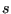
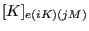
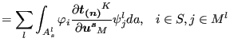
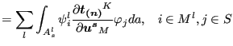
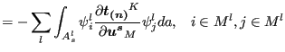
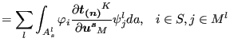
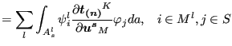
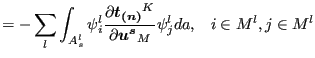
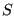

This is a material formulation for very special applications. Small strains (i.e. linearized strains) are large rotation sensitive, i.e. they become nonzero if you apply a large rigid body rotation to a structure (cf [18]).
The Lagrange strain tensor satisfies:
|  | (257) |
which can also be written as:
|  | (258) |
 is the deformation gradient and the expressions in parentheses
are the gradient of the displacements. Linearizing, only the first two terms on
the right hand side of the above equation are kept. This linearization,
however, is not large-rotation insensitive. In order to create a
rotation-insensitive linear strain, the deformation gradient is replaced by
the right hand stretch tensor
 (recall that
, where
 is the rotation tensor):
is the deformation gradient and the expressions in parentheses
are the gradient of the displacements. Linearizing, only the first two terms on
the right hand side of the above equation are kept. This linearization,
however, is not large-rotation insensitive. In order to create a
rotation-insensitive linear strain, the deformation gradient is replaced by
the right hand stretch tensor
 (recall that
, where
 is the rotation tensor):
|  | (259) |
This strain is, although linear, large rotation insensitive. Now, what is this good for? In some applications (e.g. in linear elastic fracture mechanics) you need linear strains exhibiting the appropriate stress and strain singularities (e.g. at the crack tip). However, you would still like to include appications with large rotations. The above formulation takes care of exactly these requirements.
In order to apply this formulation in CalculiX, the user has to specify the parameter NLGEOM on the *STEP card. In those elements, in which rotation-insensitive linear strains should be used, the user has to replace the linear elastic isotropic material he/she would usually apply by the user material coded in routine umat_undo_nlgeom_lin_iso_el.f. To that end the user gives a new name to the material starting with UNDO_NLGEOM_LIN_ISO_EL. The constants of this user material are the Young's modulus and Poisson's coefficient of the original material. Suppose the original material formulation was:
*MATERIAL,NAME=EL *ELASTIC 210000.,.3
Then, the new material is defined by:
*MATERIAL,NAME=UNDO_NLGEOM_LIN_ISO_ELx *USER MATERIAL,CONSTANTS=2 210000.,.3
where x can be whatever character string preferred by the user, minimum 0 characters, maximum 58 characters long. Only linear elastic isotropic materials are allowed so far.